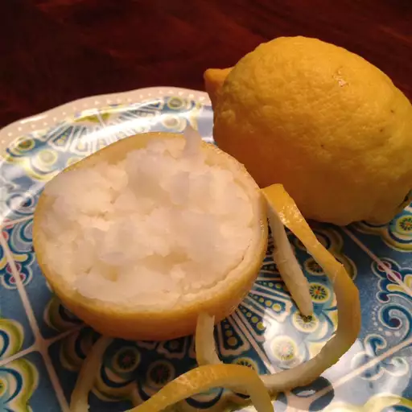

Home
Lemon Sorbet

Description
A lovely lemon sorbet made with finely diced lemon peel and lemon juice. A great way
to cleanse your palate after a meal!
Ingredients
- 1 lemon's peel, finely diced
- 1 cup water
- ½ cup sugar
- ½ cup lemon juice
- ½ cup carbonated mineral water
- 6 strips of lemon zest, for garnish
Steps
- Stir diced lemon peel, 1 cup of water, and sugar together in a saucepan; bring to a
boil, then reduce heat to medium and simmer for 5 minutes. Remove from the heat, and
allow to cool.
- Stir lemon syrup with peel, lemon juice, and mineral water together in a pitcher or
bowl. Pour into an ice cream maker, and freeze according to the manufacturer's
instructions. Garnish each serving with a twist of lemon peel.
- If you do not have an ice cream maker, you may freeze it in a tall canister. Freeze
for 1 ½ hours. Remove and stir with a whisk. Return to the freezer and stir about
once every hour for about 4 hours. The more times you stir, the more air will be
incorporated, resulting in a lighter finished product.